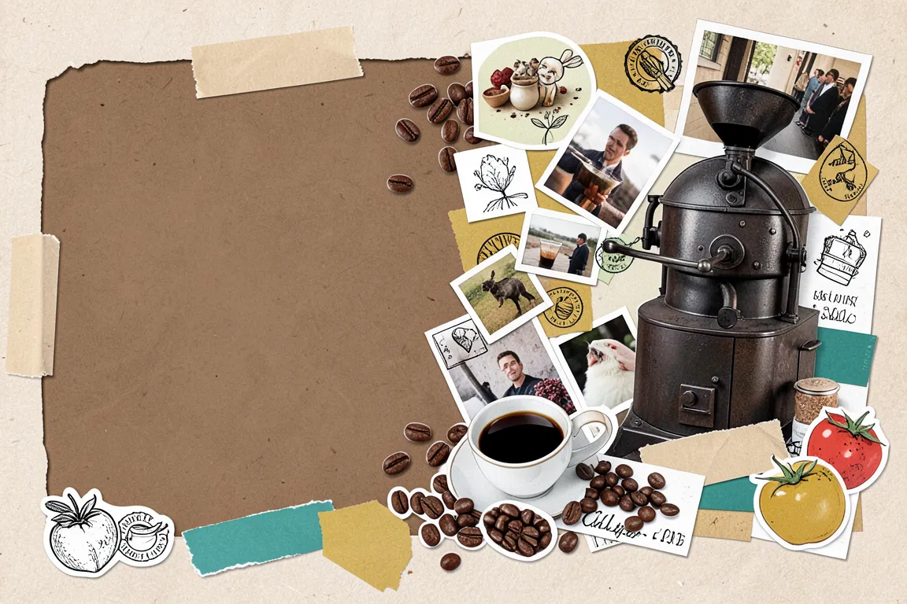

Utklipte bilder, tape, klistremerker, revet papir, håndskrevne notater og svake helninger på papirbunn. Det får en side til å føles som et håndlaget album og en personlig gjenstand.

Kjerneidé
Siden er et håndlaget album: varmt, ufullkomment og laget av et menneske.
Designprinsipper
Vipp hvert kort, bilde og klistremerke med -4° til +4°, og plasser aldri to naboer i samme vinkel.
Legg en tapestrimmel (80px ganger 24px, gul eller hvit ved 70 % dekning, rotert 5° til 15°) på øvre hjørne av bilder.
Legg til revne papirkanter med en SVG-maske med 6px til 12px amplitude på 2 sider av hver papirblokk.
Bruk en papirbunn (#F4ECD8) med korn på 4 % til 8 % og 3 til 5 flate aksentfarger med 70 % til 100 % metning.
Sett notater i en håndskriftskrift på 20px til 28px og brødtekst i en enkel sans på 16px.
Kast en myk skygge på 0 4px 8px ved 18 % under hvert papirelement og roter klistremerker med et hvitt omriss på 3px.
La elementene overlappe med 8px til 24px og lag minst 3 dybdenivåer (papir, bilde, klistremerke).